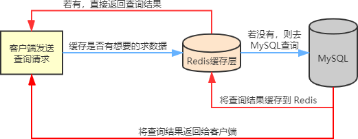
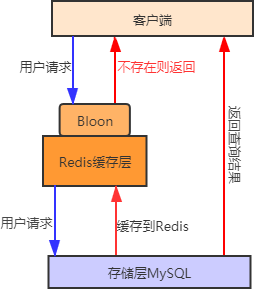

Redis缓存问题（图解：三种缓存问题）
在实际的业务场景中，Redis 一般和其他数据库搭配使用，用来减轻后端数据库的压力，比如和关系型数据库 MySQL 配合使用。
Redis 会把 MySQL 中经常被查询的数据缓存起来，比如热点数据，这样当用户来访问的时候，就不需要到 MySQL 中去查询了，而是直接获取 Redis 中的缓存数据，从而降低了后端数据库的读取压力。如果说用户查询的数据 Redis 没有，此时用户的查询请求就会转到 MySQL 数据库，当 MySQL 将数据返回给客户端时，同时会将数据缓存到 Redis 中，这样用户再次读取时，就可以直接从 Redis 中获取数据。流程图如下所示：
为了避免缓存穿透问题，下面介绍两种解决方案：
缓存击穿有两种解决方法：
Redis 会把 MySQL 中经常被查询的数据缓存起来，比如热点数据，这样当用户来访问的时候，就不需要到 MySQL 中去查询了，而是直接获取 Redis 中的缓存数据，从而降低了后端数据库的读取压力。如果说用户查询的数据 Redis 没有，此时用户的查询请求就会转到 MySQL 数据库，当 MySQL 将数据返回给客户端时，同时会将数据缓存到 Redis 中，这样用户再次读取时，就可以直接从 Redis 中获取数据。流程图如下所示：

图1：缓存使用流程图
在使用 Redis 作为缓存数据库的过程中，有时也会遇到一些棘手问题，比如常见缓存穿透、缓存击穿和缓存雪崩等问题，本节将对这些问题做简单地说明，并且提供有效的解决方案。图1：缓存使用流程图
缓存穿透
缓存穿透是指当用户查询某个数据时，Redis 中不存在该数据，也就是缓存没有命中，此时查询请求就会转向持久层数据库 MySQL，结果发现 MySQL 中也不存在该数据，MySQL 只能返回一个空对象，代表此次查询失败。如果这种类请求非常多，或者用户利用这种请求进行恶意攻击，就会给 MySQL 数据库造成很大压力，甚至于崩溃，这种现象就叫缓存穿透。为了避免缓存穿透问题，下面介绍两种解决方案：
1) 缓存空对象
当 MySQL 返回空对象时， Redis 将该对象缓存起来，同时为其设置一个过期时间。当用户再次发起相同请求时，就会从缓存中拿到一个空对象，用户的请求被阻断在了缓存层，从而保护了后端数据库，但是这种做法也存在一些问题，虽然请求进不了 MSQL，但是这种策略会占用 Redis 的缓存空间。2) 布隆过滤器
我们知道，布隆过滤器判定不存在的数据，那么该数据一定不存在，利用它的这一特点可以防止缓存穿透。
首先将用户可能会访问的热点数据存储在布隆过滤器中（也称缓存预热），当有一个用户请求到来时会先经过布隆过滤器，如果请求的数据，布隆过滤器中不存在，那么该请求将直接被拒绝，否则将继续执行查询。相较于第一种方法，用布隆过滤器方法更为高效、实用。其流程示意图如下：

图2：缓存穿透问题解决
缓存预热：是指系统启动时，提前将相关的数据加载到 Redis 缓存系统中。这样避免了用户请求的时再去加载数据。
缓存击穿
缓存击穿是指用户查询的数据缓存中不存在，但是后端数据库却存在，这种现象出现原因是一般是由缓存中 key 过期导致的。比如一个热点数据 key，它无时无刻都在接受大量的并发访问，如果某一时刻这个 key 突然失效了，就致使大量的并发请求进入后端数据库，导致其压力瞬间增大。这种现象被称为缓存击穿。缓存击穿有两种解决方法：
1) 改变过期时间
设置热点数据永不过期。2) 分布式锁
采用分布式锁的方法，重新设计缓存的使用方式，过程如下：- 上锁：当我们通过 key 去查询数据时，首先查询缓存，如果没有，就通过分布式锁进行加锁，第一个获取锁的进程进入后端数据库查询，并将查询结果缓到Redis 中。
- 解锁：当其他进程发现锁被某个进程占用时，就进入等待状态，直至解锁后，其余进程再依次访问被缓存的 key。
缓存雪崩
缓存雪崩是指缓存中大批量的 key 同时过期，而此时数据访问量又非常大，从而导致后端数据库压力突然暴增，甚至会挂掉，这种现象被称为缓存雪崩。它和缓存击穿不同，缓存击穿是在并发量特别大时，某一个热点 key 突然过期，而缓存雪崩则是大量的 key 同时过期，因此它们根本不是一个量级。解决方案
缓存雪崩和缓存击穿有相似之处，所以也可以采用热点数据永不过期的方法，来减少大批量的 key 同时过期。再者就是为 key 设置随机过期时间，避免 key 集中过期。关注公众号「站长严长生」，在手机上阅读所有教程，随时随地都能学习。内含一款搜索神器，免费下载全网书籍和视频。

微信扫码关注公众号